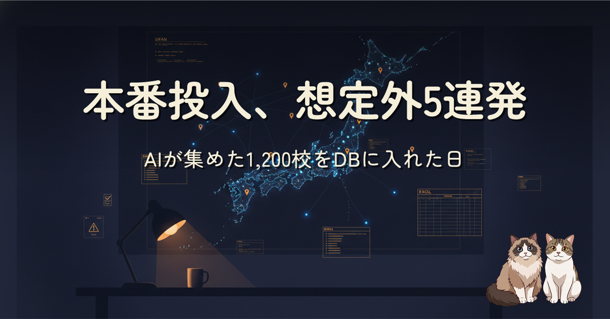

AI サブエージェント約120本が集めた東日本13道県・約1,200校の学校データを、本番の PostgreSQL に投入した日の記録です。県別の count(*) が前編記事の集計誤記を暴き、既存の本番データからは33校の欠落が grep で見つかり、投入当日は外部キー制約・一意制約・サイレント NULL の3連発。それでも無事に終わったのは、DB の基本機能が要所で止めてくれたからでした。
前編「サブエージェント約120本を指揮して、東日本13道県・約1,300校の学校データ整備を2日で終えた話」の続編です。集めたデータを本番に入れる工程で、AI の自己申告集計は足し算から疑うこと、エラーで止まる失敗より静かに壊れる失敗のほうが高くつくこと、そして本番に触る操作は人間の承認とバックアップを通す1つの関門に集約することを、実際に踏んだ5つの想定外とともにまとめています。